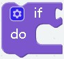
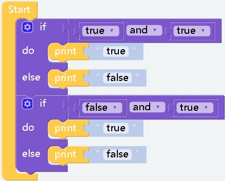
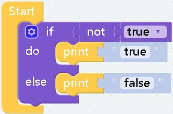
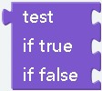
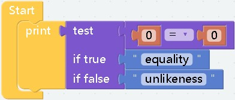

logic¶

effect： Used to capture changes in variables to respond When the condition is met, that is, when the parameter value is true, the content of the block will be executed
-
effect： Compare the left and right parameters, return a Boolean value, return true if the condition is met, otherwise return false
parameter： The value type on the left and right sides must be the same, for example, both are numbers or both are characters
-
effect： It will return a Boolean value, and the parameters on both sides must also be Boolean values. If both sides are true, return
true. If either party is false or both parties are false, returnfalse.
-
effect： Returns a boolean value, the parameters on both sides must also be boolean values, as long as either of them is
true, it will returntrue, and only when both arefaslewill it returnfalse

computational results:true false
-
effect： Splicing before the block whose return value is Boolean will get the opposite Boolean value

computational results:false
-
effect： That is, the boolean value
true.
-
effect： That is, the boolean value
false.
-
effect： Generally used to compare or assign values to variables
-
effect： In fact, it has the same function as the
trueblock and thefalseblock. They are all boolean values, but this block is more suitable for switch state assignment.

effect： This is a ternary expression, if the return value of
testistruethen the block afterif truewill be executed, and vice versaexample：

computational results:equality